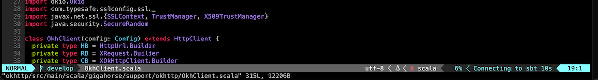
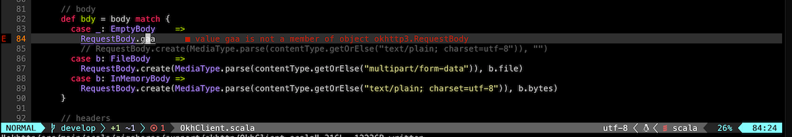

Use Neovim
This is a draft documentation of sbt 2.x that is yet to be released. This is a placeholder, copied from sbt 1.x.
Objective
I want to use Metals on Neovim with sbt as the build server.
Steps
Chris Kipp, who is a maintainer of Metals, created nvim-metals plugin that provides comprehensive Metals support on Neovim. To install nvim-metals, create lsp.lua under $XDG_CONFIG_HOME/nvim/lua/ based on Chris's lsp.lua and adjust to your preference. For example, comment out its plugins section and load the listed plugins using the plugin manager of your choice such as vim-plug.
In init.vim, the file can be loaded as:
lua << END
require('lsp')
END
Per lsp.lua, g:metals_status should be displayed on the status line, which can be done using lualine.nvim etc.
- Next, open a Scala file in an sbt build using Neovim.
- Run
:MetalsInstallwhen prompted. - Run
:MetalsStartServer. - If the status line is set up, you should see something like "Connecting to sbt" or "Indexing."
 - Code completion works when you're in Insert mode, and you can tab through the candidates:

- A build is triggered upon saving changes, and compilation errors are displayed inline:

Go to definition
- You can jump to definition of the symbol under cursor by using
gD(exact keybinding can be customized):

- Use
Ctrl-Oto return to the old buffer.
Hover
- To display the type information of the symbol under cursor, like hovering, use
Kin Normal mode:

Listing diagnostics
- To list all compilation errors and warnings, use
<leader>aa:

- Since this is in the standard quickfix list, you can use the command such as
:cnextand:cprevto nagivate through the errors and warnings. - To list just the errors, use
<leader>ae.
Interactive debugging with Neovim
- Thanks to nvim-dap, Neovim supports interactive debugging. Set break points in the code using
<leader>dt:

- Nagivate to a unit test, confirm that it's built by hovering (
K), and then "debug continue" (<leader>dc) to start a debugger. Choose "1: RunOrTest" when prompted. - When the test hits a break point, you can inspect the values of the variables by debug hovering (
<leader>dK):

- "debug continue" (
<leader>dc) again to end the session.
See nvim-metals regarding further details.
Logging into sbt session
We can also log into the existing sbt session using the thin client.
- In a new vim window type
:terminalto start the built-in terminal. - Type in
sbt --client

Even though it's inside Neovim, tab completion etc works fine inside.